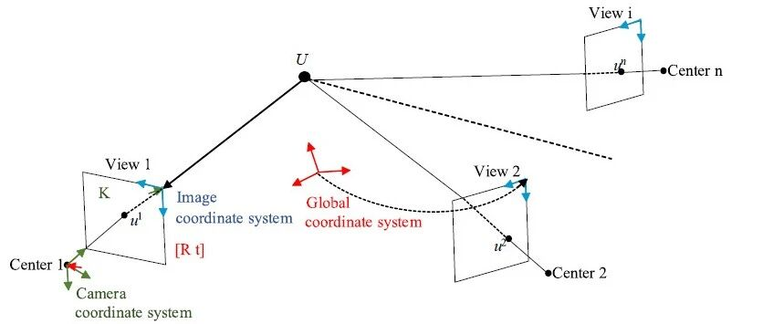

新论文 | 基于相位的结构运动识别

DOI: https://doi.org/10.1016/j.engstruct.2022.115259

DOI: https://doi.org/10.1111/mice.12957
石幕墙结构位移识别视频
00
太长不看版
随着计算机视觉技术的发展，越来越多的研究尝试使用基于视觉的方法测量建筑与基础设施的位移响应。然而这类技术会受到采集图像固有噪声以及相机分辨率的限制，另外对于结构的微小运动估计及参数识别也略显不足。基于相位的运动识别技术，可较好地识别结构的微小运动响应。但在稍大运动情况下得到的相位周期不同步会导致运动结果估计错误；估计过程还会出现相位病态估计问题；并且这类方法通常被局限于一维或二维空间。所以我们提出了以下两种方法解决这些问题。方法1通过加权相位展开求解相位估计问题，并通过基于重加权lq范数的多视角估计将其扩展到三维坐标；方法2通过三步稀疏优化，使得相位运动信息偏离限制条件，同时解决相位病态问题，保证信号的重构准确性。方法1发表于杂志《EngineeringStructures》，方法2发表于杂志《Computer-Aided Civil and Infrastructure Engineering》。
01
研究背景
课题组此前介绍过相关的机器视觉技术(参见：《新论文：使用深度学习超分辨率技术提升基于计算机视觉的位移测量精度》(Sun et al., 2022))。这次介绍的是基于相位的方法(Wadhwa, et al., 2017)，也就是通过图像相位信息转化为运动响应。先简要介绍一下相位估计中会出现的相位阶跃问题:

图1 相位差较小情况下的相位路径变化

图2 相位差较大情况下的相位路径变化
图1(a) 表示一个正弦波方程，以及与其相位差为π/3的另一个正弦波方程, 图1(b) 表示若干经过相位差变换后的正弦波，这些相位差都小于2π，可以发现变化后的各个正弦波之间相位仍旧同步。图2(a) 表示一个正弦波方程，以及其相位差为π/3+2π的另一个正弦波方程, 图2(b)表示若干经过相位差变换后的正弦波，这些相位差中的部分数值大于2π，可以发现这部分的相位已经明显不同步了。这说明在运动稍大的情况，相位阶跃现象对基于相位的方法影响较大，而我们提的两种方法初衷主要为了解决相位阶跃现象，并希望同时解决病态问题和三维估计问题。在这里提一下，相位病态问题指的是：因为相位估计问题是一个逆问题，所以在这过程中，计算噪声和环境噪声容易扩散，最终影响结果。
02
研究方法
方法1
根据上述相位阶跃现象，可以看出错误的相位信息与真实的相位信息，相差2π的整数倍。那么可否求解这个整数？通过查阅资料，发现可以通过求解相位展开问题实现，并可以同时求解相位病态问题。计算流程图如图3所示。

图3 方法1流程图
首先为了解决相位分析中的相位阶跃现象，需要利用相位展开理论对估计得到的初始相位进行增减整数倍2π估计。
但相位展开的过程中，也得同时考虑相位病态估计问题，这就需要将上述的相位展开问题扩展到加权相位展开问题，也就是在相位展开的时候也同时隔离噪声信息。
为将其扩展到三维空间，需要先检测特征点，然后通过特征点集合来求解投影矩阵。但在传统多视角计算过程中，这类特征点中会包含大量的异常点影响结果，传统方法如RANSAC，MSAC等算法虽然可去除部分异常点，却难以将其彻底去除。为解决该问题，我们将异常点去除及投影矩阵求解问题转化为lq范数多视角最小化问题，并根据迭代重加权方法优化求解。具体流程见图3右半部分。
方法2
从方法1可以看到，在解决相位阶跃现象和相位病态估计问题中，主要基于相位展开理论，但该理论需要不断进行迭代，因此会产生计算误差，计算的整数也不一定完全准确。
为进一步提高精度，因此在方法2中，我们避免使用繁琐的相位展开理论，直接从相位运动的本质方程入手:
αδ(t)<ϑ
其中，α为放大倍数，δ(t)为运动方程，ϑ为最大限制。
可看到只需减少运动方程δ(t)的数值，也就是对运动方程降采样，就能避免触碰到临界值。但对视频文件降采样同时还需防止信息丢失，故需要进一步恢复视频信息。因此可以采用压缩感知的思想，该方法利用信号稀疏的特性，相较于奈奎斯特理论，得以从较少的测量值还原出原来的整个信号。但传统压缩感知一般适用于一维信号，因此我们设计了一种基于稀疏增强的压缩感知方法来求解三维视频信号的运动降采样与恢复问题，并同时利用这个算法通过视频信号的重构解决相位病态估计问题，计算流程图如图4所示。

图4 方法2流程图
首先对视频信息进行降采样，然后将视频中的图片分为关键帧(key frame)和非关键帧(non-key frame)两部分，划分标准如图5所示，Q为采样频率。其中关键帧采样频率较高，非关键帧采样频率较低。

图5 关键帧与非关键帧划分图
因为视频信号主要分布在空域、块域、时间域这三个层次，所以所提方法也得从这三个层次，并分别根据其不同特性，逐步来建立压缩感知的稀疏优化方法。
首先是空域上的稀疏优化，可通过对关键帧与非关键帧都进行多假设预测(MH)实现，但一些研究发现在MH 预测中会出现病态估计问题，所以在求解过程中又进一步引入Tikhonov正则化算子，来进一步避免病态问题产生。
然后是图像块域上的稀疏优化，由于在第一步的MH预测过程中，块与块是分开计算的，故需要考虑这之间的相关性。因此在这一步提出两个权重矩阵来解决块之间相关性问题，并引入稀疏编码的正则化项中，从而实现块域上的稀疏优化。
接下来是时间域上的稀疏优化，主要通过利用重加权残差稀疏性建模来增强关键帧与非关键帧之间的时间相关性。最后才是基于相位的运动估计。
03
试验验证
方法1
方法1被应用于3层钢筋混凝土框架结构的振动台试验，测试结构和相机的整体布局如图6所示。三台相机与振动台在x和y方向上的距离都为4000mm。在测试中，加载了1995年1月17日阪神大地震中神户市记录的名为JMA Kobe的地震波，四个工况下的峰值加速度分别为0.07 g，0.20g，0.40g和0.62g，在x和y方向连续加载。

图6 三层框架试验布置图
首先进行多视角估计性能比较，方法1中的加权lq最小化方法分别与主流的MSAC以及l1最小化方法进行对比。比较结果如图7所示，异常值去除能力可通过松弛数量的数量反映，通常将数值大于1e-7的松弛变量(见图7中基线)，作为已去除的异常值。根据图8中结果，MSAC，l1最小化以及加权lq最小化方法去除的异常值数量分别为23，25以及25。为更加区分后两种方法的优劣性，可通过计算这两种方法松弛变量的绝对值之和，l1最小化以及加权lq最小化方法的数值分别为129.8258以及192.6778。这说明加权lq最小化方法去除异常值效果更佳。

图7 根据松弛变量的异常值去除能力比较
根据相机的记录视频，分别使用方法1及传统的方法对结构振动位移进行识别。在传统方法中，先在每个相机视图中使用基于相位的运动识别方法，获得二维位移，再利用加权lq最小化方法得到的投影矩阵，将二维位移投影到三维空间；在方法1中，使用加权相位展开后识别得到的二维位移，再通过加权lq最小化方法投影到三维空间。部分层间位移时间序列的定性比较结果如图8所示。可看到方法1相对于传统的方法，所得到的位移数据与参考数据更为接近。

图8 三层框架结构位移结果对比图
方法2
方法2被应用于5层石幕墙结构的振动台试验，测试结构和相机的整体布局如图9所示。两台相机与振动台在x和y方向上的距离都为3000mm。在测试中，加载的地震波分别是人工波和Taft波。其中，人工波的峰值加速度分别为0.07 g和0.20g，Taft波的峰值加速度分别为0.40g和0.62g，四个工况在x和y方向上连续加载。

图9 五层石幕墙试验布置图
部分位移时间序列的比较结果如图10所示。可看到方法2相对于基于相位的方法，以及基于多频率分析的方法(Cai et al., 2022)，所得到的位移数据与参考数据更为接近。

图10 石幕墙结构位移结果对比图
04
结论
我们提出了两种方法，对基于相位的结构运动识别方法进行改进，方法1通过加权相位展开求解相位估计问题，并通过基于重加权lq范数的多视角估计将其扩展到三维坐标；方法2通过三步稀疏优化，使得相位运动信息偏离限制条件，同时解决相位病态问题，保证信号的重构准确性。相关试验记录如下：
在3层框架多视角分析中，基于重加权lq范数的方法与MSAC以及l1最小化方法进行对比，获得了最佳的异常点去除效果；
在3层框架位移识别中，基于重加权相位展开的方法能进一步地提高识别准确性；
在石幕墙结构位移识别中，相比于相位方法和多频率分析方法，稀疏优化的方法获得了明显更好的识别结果。
05
参考文献
Sun, C., Gu, D., Zhang, Y. & Lu, X. (2022), Vision-Based Displacement Measurement Enhanced by Super-Resolution Using Generative Adversarial Networks, Structural Control and Health Monitoring, 29(10), e3048.
Wadhwa, N., Chen, J. G., Sellon, J. B., Wei, D., Rubinstein, M., Ghaffari, R., Freeman, D. M., Büyükoztürk, O., Wang, P. & Sun, S. (2017), Motion Microscopy for Visualizing and Quantifying Small Motions, Proceedings of the National Academy of Sciences of the United States of America, 114(44), 11639-11644.
Cai, E., Zhang, Y. & Quek, S. T. (2022), Visualizing and Quantifying Small and Nonstationary Structural Motions in Video Measurement, Computer-Aided Civil and Infrastructure Engineering, 00, 1-25.

蔡恩健
---End---
相关研究
学术报告视频
专著
人工智能与机器学习
---结构智能设计
---其他土木工程领域人工智能研究
城市灾害模拟与韧性城市
高性能结构与防倒塌
新论文：抗震&防连续倒塌：一种新型构造措施
长按识别二维码，关注我们的科研动态